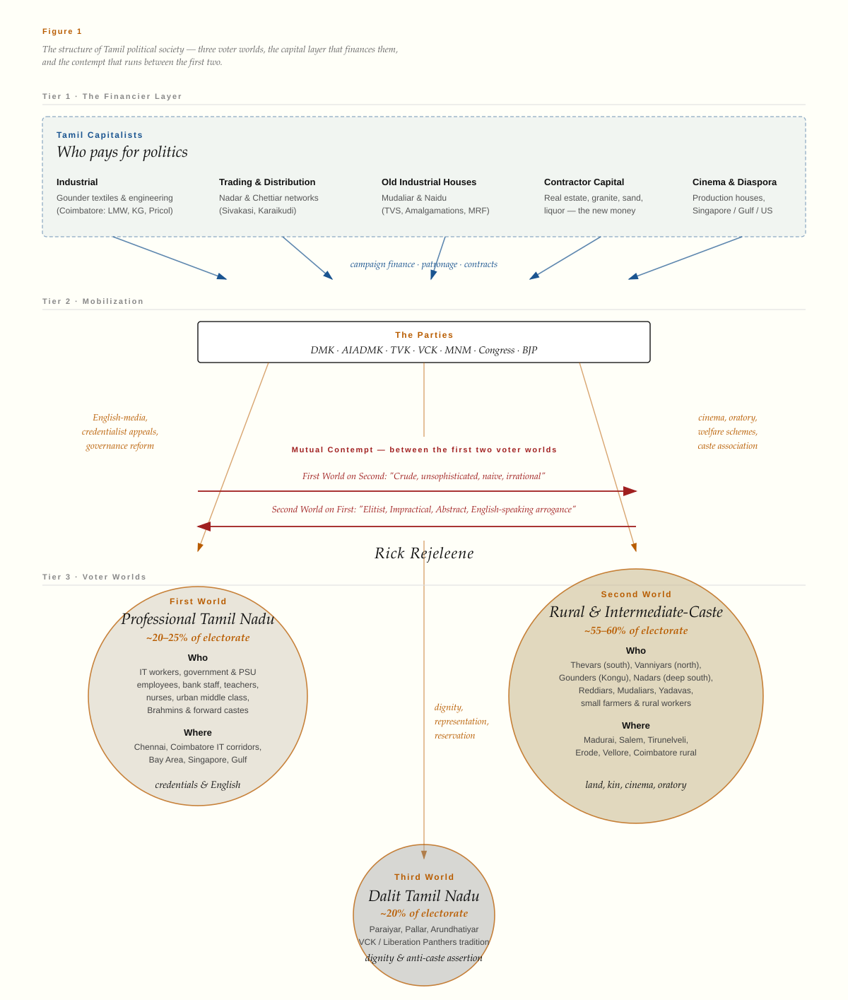

Why Tamil Nadu Elects Film Stars?
What kind of society makes film stars politically powerful?
Tamil Nadu has made another film star the central figure of state politics.
Many discussions among educated Tamils conclude with the same set of views: Tamils are cinema-obsessed. Tamils confuse actors for leaders. Tamils have a weakness for spectacle. This is what urban Tamil professionals tell each other.
In this post, I want to show this explanation is not just wrong, it is itself a piece of evidence about what is going on. The contempt of the urban professional class for film star politics is data, about the urban professional class.
Rather than asking why are Tamils obsessed with cinema, I want to ask a deeper question: What kind of society makes film stars politically powerful?
To answer that, I am going to apply works from my readings from sociology and anthropology. The scholars give us a vocabulary that the standard English language commentary does not have.
Vijay’s Tamilaga Vettri Kazhagam, formed in 2024, won 108 seats in its first election. The DMK alliance fell to 73. The AIADMK alliance underperformed. Turnout was 85.1 percent, extraordinarily high. The result is a hung assembly, the first in the state’s history. It is the first time since MGR in 1977 that a party led by an actor-turned-politician has won on its first try[1]–[3].
A note on method
A Social Scientific approach to society begins with thick description, reading a political act through the symbolic system the actors actually inhabit, not through its surface form[4].
I borrow from eight thinkers. Each gives us a single tool.
| Scholar | Key Work | What they give us |
|---|---|---|
| M.N. Srinivas | The Remembered Village (1976) | The dominant caste the caste that holds numerical strength, land, and ritual standing in a locality. Rural Indian politics runs through these locally dominant castes, and crucially, the dominant caste of a village is not the dominant caste of the state. |
| André Béteille | Caste, Class and Power (1965) | Caste, class, and power are separate dimensions that need not align. A man can be high in caste, low in class, and weak in power. |
| Robert L. Hardgrave | The Dravidian Movement (1965); The Nadars of Tamilnad (1969) | The historical anchor. Dravidian parties built mass politics by bypassing the Brahmin dominated Congress; the Nadars moved from periphery to political center in a few generations.1 |
| C.J. Fuller | Tamil Brahmans (2014, with Haripriya Narasimhan) | How a small caste with ritual and educational capital reengineered itself, in two generations, into a global professional class.2 |
| M.S.S. Pandian | The Image Trap (1992) | The screen persona of the film star, protector of the poor, defender of the weak, transfers onto the political figure in a way no caste leader can match. The image does the political work. |
| Bernard Bate | Tamil Oratory and the Dravidian Aesthetic (2009) | Dravidian legitimacy is constituted through a particular aesthetic of speech, literary registers, emotional cadence, pure Tamil (tanittamil). This is why a tearful rally speech lands the way it does. |
| Hugo Gorringe | Untouchable Citizens (2005); Panthers in Parliament (2017) | The third Tamil Nadu — VCK, the Liberation Panthers, and Dalit politics organized around dignity and anti-caste assertion. |
| Nicholas Dirks | Castes of Mind (2001) | The political salience of Vanniyar, Thevar, Gounder, Nadar as bloc identities is itself a colonial era product, not a timeless fact. |
The eight will not all agree with each other. Dirks might push back on Srinivas. Gorringe writes against the assumption that intermediate caste mobilization is the whole of Tamil politics. That is the point. The job is to put them all together to work on one question: What kind of society makes film stars politically powerful?
Three Tamil Nadus
Tamil Nadu contains at least three political worlds that share the same geography. They operate on different theories of legitimacy.
A note on size. These are rough estimates, not census categories. As a working approximation: the professional class first Tamil Nadu is perhaps 10–15 percent of the electorate, the rural and small town intermediate caste second Tamil Nadu is roughly 60–65 percent, and Dalit Tamil Nadu is around 20 percent, with overlap at the edges. The point is the relative size, not the precise figure

The first world is the urban professional Tamil Nadu. The urban professionals include people who work in IT service sector. They are college educated, mostly white-collar, and shaped by years of competitive testing, the entrance exam ladder that runs from school rankings through medical or engineering college admissions to professional placements. They carry a quiet status anxiety about which medical or engineering college someone attended, which company hired them, and which school the children got into. They also have a quiet contempt or apathy toward politicians. In governance, they have a strong preference for transparency, processes, meritocracy and competence as political virtues. They might be living in apartment complexes in Velachery and Adyar, or in Bay Area, Dallas, Atlanta, Austin suburbs and Singapore condominiums. Their parents, grandparents may have lived in agraharams or in villages, but the family climbed out through the credential ladder, exams, English, engineering, medicine, IT, a U.S. master’s, the civil service. This world of Tamil Nadu was shaped early by the urban migration of Tamil Brahmins and other forward castes, which Fuller documents carefully in Tamil Brahmans 3. It now includes anyone who has fully entered that ladder, regardless of caste origin. In Béteille’s vocabulary, this world has high cultural capital and high class position, but in rural-political terms, measured in land, kin, voters mobilized, its political power is thin.
The second world is rural and small town Tamil Nadu, organized around the intermediate castes. Thevars across much of southern Tamil Nadu, especially Madurai, Ramanathapuram, Sivagangai, Theni and nearby regions. Vanniyars in the north. Gounders in Kongu Nadu. Reddiars, Naidus, Mudaliars, and other locally powerful groups in particular pockets. Nadars across Tirunelveli and Kanyakumari. These are Srinivas’s dominant castes in their Tamil specificity, landed, numerically concentrated, politically organized through caste associations.4 Political legitimacy for them runs through loyalty, kinship, welfare delivery, patronage-networks, caste associations, temple influence, and emotional identification with charismatic leaders. Education matters, but credentials are not the currency of political-power. What works is being seen as a protector of your people. Cinema turned out to be an unmatched technology for projecting that image at scale, Pandian’s “image trap.” This world is numerically the heart of Tamil politics, which is why the first world keeps losing arguments about it. A note before going further: I use these caste names, Thevar, Vanniyar, Gounder, Nadar, because they are the operative political identities in Tamil Nadu today.
The third world is Dalit Tamil Nadu. The two-worlds frame does not capture it. Dalit communities are internally diverse from agricultural laborers, middle class professionals, small business owners, Gulf migrants, IT workers in the diaspora, but Dalit politics in Tamil Nadu, as Gorringe documents in Untouchable Citizens and Panthers in Parliament, has built its own theory of political legitimacy. It is organized around dignity, anti caste assertion, protection from dominant caste violence, and Ambedkarite consciousness, a tradition that runs from Iyothee Thass through Ambedkar to Thol. Thirumavalavan and the VCK today. It is neither professional-class credentialism nor rural-elite patronage. It is its own thing, and it deserves its own analysis.
The older film-star model lived most clearly in the second Tamil Nadu, the rural and small-town world of kinship, patronage, welfare, and emotional identification. Vijay’s 2026 result may be different. Early results suggest that TVK also made unusually strong gains in urban constituencies. That means Vijay may not be a simple repetition of MGR. He may represent a hybrid coalition: cinema charisma for one audience, anti establishment reform for another, and generational impatience across both.
A fourth complication is worth naming. Religion does not sort Tamil Nadu the way class and caste do. Tamil Hindus span all three worlds. They can be middle-class urban professionals, intermediate-caste rural landowners, Dalit agricultural laborers, working-class migrants, or the religiously devout who organize politically around Hindu identity. There is no single Tamil Hindu vote, because there is no single Tamil Hindu position on caste, class, or the credential ladder. The BJP’s repeated failure to build a Tamil Hindu bloc on the model that works in the Hindi belt is the practical evidence of this.
Tamil Christians and Tamil Muslims are not separate political worlds either. They participate in all three of the worlds above, depending on caste history, class position, region, and migration pathway. A middle-class Catholic family in Nagercoil and a middle-class Brahmin family in Mylapore often share more political instincts than either shares with their working-class co-religionists. A coastal Catholic fishing community and a Vanniyar farming village often have more in common politically than that Catholic community has with English-speaking urban Christians.
This is exactly Béteille’s point about the analytical separation of caste, class, and power. Religion sorts people on some axes; class and caste sort them on others. The film star phenomenon cuts across religious lines because it responds to the class and caste structure underneath.
Who pays for Politics?
The three voter worlds are not the whole story. Above all three sits a layer that no honest map of Tamil political power can leave out: Tamil capitalists. The financiers of Tamil politics are not a fourth voter bloc. They are a different kind of actor, the people who fund the parties that mobilize the three worlds.
It is worth naming who they are concretely.
There is Industrial capital, concentrated in the Coimbatore Tirupur and Erode belt, dominated historically by Gounder families. Lakshmi Machine Works, KG Denim, Pricol, Roots Industries, the textile mills, the pump and motor industry. This is the engine room of Tamil Nadu’s manufacturing economy, and it has long maintained close ties to whichever party held the Kongu region. This is Béteille’s point made concrete. A Gounder industrialist in Tirupur can be high in class and high in regional caste power, while still having less state-level political reach than a Thevar politician with a fraction of the wealth. Caste, class, and power are separate dimensions, and the financiers of Tamil politics often sit high on two of them and lower on the third
There is Trading and Distribution capital, especially Nadar led Sivakasi printing and fireworks, the Tiruchendur trading networks, the Kanyakumari diaspora and the old money Nagarathar Chettiar finance and trading networks centered in Karaikudi. The Nadars in particular, as Hardgrave documents, used caste association, education, and migration to convert merchant capital into political influence over a century.
There are the Old industrial houses The old industrial houses include old-money Mudaliar and Naidu families behind TVS, Amalgamations, MRF, and the older Madras-based business establishment. These groups historically had Congress alignments and have since spread their political bets.
There is Contractor capital, newer money, minted over the last few decades through real estate, granite, sand mining, liquor distribution, and road and irrigation contracting. This is where much of the new money flowing into Tamil politics comes from. New money is flashy and flaunts its wealth. It is less prestigious in cultural capital terms than the old industrial houses, but it is far more politically active, because contractor capital depends directly on state decisions, which roads get built, which mines get licensed, which liquor outlets get assigned. This layer fuels the routine functioning of political society at the state level.
There is Cinema capital itself: Production houses, distributors, the financial machinery of the Tamil film industry. The link between cinema money and political money in Tamil Nadu is old.
And there is Diaspora capital: This is loosely from Tamil Sangams across the globe, who are networked across the globe. They might be in UK, Europe, Singapore, Malaysia, the Gulf, the United States. Money from the Tamil speaking abroad flows back to caste associations, temples, party chapters, and increasingly to direct candidate campaigns.
Money from these layers flows down into the parties, DMK, AIADMK, TVK, VCK, MNM, Congress, BJP, and the parties then mobilize voters in the three worlds using the technologies appropriate to each: cinema and welfare and oratory in the second world, governance and reform messaging in the first, dignity and representation in the third.
The diagram in Figure 1 makes this stack visible. Capital at the top, parties in the middle, voters at the bottom, with the contempt arrows running between the first two voter worlds. The film star phenomenon is what happens at the bottom of this stack, not a free standing cultural quirk, but the visible end of a long chain of financing and mobilization.
A useful exercise for any reader is to ask, of any specific Tamil politician: which financier networks back this person, which voter world does this person mobilize, and through which technology, caste association, cinema, oratory, welfare?
Mutual contempt as a sociological fact
The first two worlds, urban professional and rural intermediate caste, hold each other in contempt. This is not an accident or a problem to be smoothed over by better dialogue. It is a structural feature, and it is observable in the small things.
The examples below are the same act read through two symbolic systems. Each cell is internally coherent. Neither side is misreading the other, they are correct readings of different things.
Table 1. The First Tamil Nadu and the Second Tamil Nadu read the same act differently.
| The same act | First Tamil Nadu sees | Second Tamil Nadu sees |
|---|---|---|
| Cash handed out in an envelope before an election | Bribery. Vote-buying. A corrosion of democratic norms. A sign the political class assumes we can be bought, and a sign the voter has accepted the price. | A small acknowledgment in a long relationship. The party knows our street, our family, our hardship. The cash is a token, not the reason. We will vote how we were going to vote anyway. |
| A government scheme giving free bus travel to women, 100 units of free electricity, or a Pongal gift hamper | Freebies. Fiscal irresponsibility. Buying loyalty with the state’s own money. A welfare scheme that should have been means-tested. A corrosion of the idea that government is for governance, not gifts. | The state showing up in our lives. A government that knows the price of a bus ticket and an electricity bill, and acts like it. The first time in our family’s history that the state has done anything for us rather than to us. |
| A film star giving a tearful speech at a rally | Theatrics. Manipulation. Performative emotion designed to bypass reasoning. Cringe. | A leader unafraid to feel publicly on our behalf, in a register we recognize from a thousand years of Tamil literature. The opposite of bureaucrats and technocrats who treat us as case files. |
| A child going to a tier-three college, and the family is genuinely proud | They do not even know what good is. Look at where they sent the kid. | These urban people replaced family standing with a credential ladder, and now they look down on us for not playing their game. Our pride is correct. |
Table 2. The Third Tamil Nadu reads the first two differently than they read themselves.
| The act | First or Second Tamil Nadu’s self-reading | Third Tamil Nadu’s reading |
|---|---|---|
| A Thevar or Vanniyar family refusing a marriage alliance with a Dalit family | (Second world) A correct preservation of family, kinship, and tradition. Marriage is alliance between lineages, not individuals. | Casteism enforced through kinship, sometimes through violence. The defense of “tradition” is the defense of a specific hierarchy that puts us at the bottom. The same families that talk about kin and standing are the ones whose young men have killed our young men for crossing the line. |
| An urban professional Tamil saying “I don’t see caste” | (First world) Modernity. A meritocratic, post-caste outlook. The right way to live in 2026. | A claim only available to people whose caste has stopped being a problem for them. “Not seeing caste” is what the upper castes call it when they have stopped having to think about something we cannot stop thinking about. The first world’s caste-blindness is itself a caste position. |
| A government welfare scheme, free bus travel, 100 units of electricity, marriage assistance | (Second world) The state showing up. (First world) Freebies and fiscal irresponsibility. | A real material gain, especially for Dalit households who depend on these schemes more than the second world does. But also a reminder that welfare delivery is not the same as dignity. A free bus ride does not undo what happens at the village tea shop. |
| A Dravidian movement claim to have ended caste in Tamil Nadu | (Both first and second worlds, in different registers) A legitimate civilizational achievement. The reason Tamil Nadu is different from the Hindi belt. | A myth maintained by the dominant intermediate castes who benefited from the Dravidian movement. Periyar attacked Brahmin dominance, which mattered, but caste did not end, it reorganized. The new dominant castes are not Brahmins. They are Thevars, Gounders, Vanniyars, Nadars. We know this because we live with them. |
In every row, both sides are using the same word — Good leader, Good education, Good marriage — to mean different things. Each side experiences the other as obviously wrong. Sociologists call this Value Mismatch.
Bernard Bate’s work on Tamil political speech is especially useful for the second row. Bate shows that the tearful, literary, emotionally elevated rally speech is not theatrics in the way the first world reads it. It is a specific aesthetic form with deep roots in Tamil literary and devotional culture, and it constitutes legitimacy. The speaker is performing a recognizable role, protector, supplicant on behalf of the people, righteous defender, and the audience knows the form. To call it manipulation is to fail to read the genre. The professional class, trained in school to distrust emotion in public reasoning, has the wrong literacy for it.
Who gets to narrate Tamil Nadu?
I said the contempt is mutual, and it is. But the volumes are not equal. Professional class contempt sets the tone of English language media, op-eds, podcasts, diaspora WhatsApp groups, and the comment sections that essays like this one circulate in. Rural contempt exists, sometimes intensely, but it does not have the same megaphone. It expresses itself at the ballot box, in marriage refusals, in who gets invited to whose function, in which leaders draw crowds.
One side controls the commentary. The other side controls the election. Every election cycle, the professional class is genuinely surprised. The rural electorate is not. The first world is reading polls and op-eds, the second world is reading the candidate, the speeches, they are at the rallies, villages, and they are aware of the ground reality.
Why cinema triumphed
There is a structural reason cinema worked in Tamil Nadu and nowhere else with quite this completeness. No single caste dominates the state numerically.
Thevars are powerful in the South but not the West. Gounders dominate Kongu Nadu but not the delta. Vanniyars are concentrated in the north. Nadars in the deep south. Brahmins are culturally visible across the state but demographically thin and concentrated in a few urban pockets. No caste can field a candidate and assume the rest of the state will fall in line.
This is the Srinivas point, applied at scale. The dominant caste of a village is not the dominant caste of the state. Tamil Nadu is a patchwork of regionally dominant castes, none of which can build a state-wide majority on caste alone. Any politics that works at the state level has to cross castes. The question is what kind of person can do that
A film star floats above caste in a way a caste leader cannot. The image on the screen is everyone’s and no one’s. This is Pandian’s central claim. MGR’s screen persona, the protector who fights for the poor, defends the weak, defeats corrupt elites, was transferable onto the political figure precisely because it was not anchored in any single caste’s symbolic universe. The cinema hall did the work that no caste association could do. MGR, Karunanidhi (as a screenwriter first), Jayalalithaa, and now Vijay all worked because cinema solved a structural coordination problem that pure caste politics could not solve in this specific demography.
Hardgrave’s The Dravidian Movement makes the historical version of this point. The DMK and its predecessors built mass politics by deliberately bypassing the Brahmin dominated Congress establishment and the caste association politics that would have fragmented the state. Cinema, oratory (Bate’s contribution), and a populist welfare promise were the chosen instruments. This was a design choice, made by people who understood their society.
This is a feature of Tamil Nadu’s caste arithmetic.
A test the model should pass: Kamal Haasan
If this account is right, it makes a sharp prediction. A film star running on professional class values, transparency, anti-corruption, technocratic competence, English-language intellectual respectability, should fail. He would be pitching the wrong product to the wrong market. The cinema imagery would be present but the political content would be aimed at a class that does not need cinema to reach it. In Pandian’s terms, the image trap requires a particular kind of image; an English-speaking technocrat-on-screen is not it.
Kamal Haasan launched Makkal Needhi Maiam[5] in 2018 on exactly that platform. He had urban appeal, intellectual credibility, fluent English, and the respect of the first Tamil Nadu. In the 2021 Tamil Nadu Assembly election[6], MNM contested 180 seats, won none, and Haasan lost his own Coimbatore South seat[7]; the party’s vote share was about 2.62%[8]
In this election, MNM contested as part of the DMK-led alliance, which is itself an admission that the standalone professional-class film-star model did not work.
The model predicted this. Score one.
A harder case: Vijay
Vijay is the case the model has to actually explain. I want to be careful here because the election is days old and constituency-level analysis has not yet been done.
What we know: TVK won 108 seats in its first election. The DMK alliance fell to 73. The AIADMK alliance underperformed. Turnout was 85.1 percent. The result is a hung assembly.
What we do not yet know with certainty: the urban-rural breakdown, the caste breakdown, and whether Vijay’s coalition is the same coalition MGR built or a new one.
Three hypotheses are worth holding open until the data lands.
First: The first is that Vijay genuinely sold different products to different audiences, anti establishment governance reform to the cities, MGR style protector imagery to the rural base, and pulled off something neither MGR nor Kamal Haasan attempted. If true, it would mean the two worlds, for one election, voted for the same person for opposite reasons. That is unstable but not impossible.
Second: The second is that the Dravidian majors have aged into the establishment so thoroughly that “anyone outside this duopoly” became its own coalition, and Vijay was the available vessel. In this reading, the vote is not an endorsement of Vijay’s specific synthesis but a rejection of the existing options. The 85 percent turnout is consistent with this, it suggests mobilization of voters who do not normally show up, which usually means anti-incumbency more than positive enthusiasm.
Third: The third is that the cinema protector model still explains most of the rural vote, the urban anti establishment mood explains the urban vote, and these two things happened to align this cycle without any single coherent explanation. Sometimes politics is just two unrelated things at the same time.
I do not know which of these is right. I think the second is the most likely, the first is the most interesting, and the third is the one most analysts will eventually settle on once the constituency data comes out, because politics usually is two things at once. We will know more in a few weeks.
A separate question, which the eight scholars cited above would all sharpen is whether Vijay’s TVK is organizationally different from the AIADMK and DMK. Whether he has simply replaced them in the same template. A new film-star party that mobilizes the same intermediate-caste coalitions, the same patronage networks, the same oratorical aesthetic Bate describes, is not a new politics. It is the same politics with a new face. If TVK turns out to be that, the 2026 result is continuity, not rupture.
Three takeaways for three worlds
If you live in the first Tamil Nadu and you want to understand why your state keeps electing film stars, the move is not to ask why they are like that.
For readers in the first Tamil Nadu: Your contempt for film-star politics is mirrored exactly. The qualities you see as virtues, restraint, transparency, technocratic competence, English fluency, ranking consciousness, read to the second Tamil Nadu as coldness, disloyalty, abstraction, and a willingness to look down on your own people. The political infrastructure of mass Tamil life was built sixty years ago, on purpose, to mobilize the state without going through your class. That is not an accident, and it is not stupidity. It is a design choice made by people who understood their society. Film-star politics is the working end of that design.
For readers in the second Tamil Nadu: The first world’s analytical vocabulary is real and worth knowing, even if its political instincts are wrong. The categories Béteille and Srinivas give us, the separation of caste, class, and power; the concept of locally dominant castes, are not first-world possessions. They describe a world that the second world lives in. These scholars lived among you. Knowing them does not make you less rooted, it makes you harder to misread.
For readers in the third Tamil Nadu: The argument here is not that the first and second worlds are doing fine and the third is the only problem. It is that the contempt between the first two worlds has so dominated English-language discussion of Tamil Nadu that the third world’s much sharper critique of both has been crowded out. Putting the three worlds in one frame makes that critique visible, and makes it harder to keep the conversation between only the first two.
The interesting question, for all three, is not whether the rural electorate will grow up and vote like urban professionals (it will not), or whether the urban electorate will rediscover loyalty to caste networks (it will not), or whether the Dravidian majors will absorb VCK politics into their own (they have tried and failed). The interesting question is whether Vijay represents a genuine third synthesis, a politics that holds the three worlds together, or whether 2026 will look, in retrospect, like another round of the same coalition with a new face.
The constituency level data will be available in the coming weeks. We will have something to test the three Vijay hypotheses against.
Selected readings
- Robert L. Hardgrave, The Dravidian Movement (1965).
- Robert L. Hardgrave, The Nadars of Tamilnad: The Political Culture of a Community in Change (1969).
- M.N. Srinivas, The Remembered Village (1976); “The Dominant Caste in Rampura” (American Anthropologist, 1959).
- André Béteille, Caste, Class and Power: Changing Patterns of Stratification in a Tanjore Village (1965).
- M.S.S. Pandian, The Image Trap: M.G. Ramachandran in Film and Politics (1992).
- C.J. Fuller, The Camphor Flame: Popular Hinduism and Society in India (1992).
- C.J. Fuller and Haripriya Narasimhan, Tamil Brahmans: The Making of a Middle-Class Caste (2014).
- Bernard Bate, Tamil Oratory and the Dravidian Aesthetic: Democratic Practice in South India (2009).
- Hugo Gorringe, Untouchable Citizens: Dalit Movements and Democratisation in Tamil Nadu (2005).
- Hugo Gorringe, Panthers in Parliament: Dalits, Caste, and Political Power in South India (2017).
- Nicholas B. Dirks, Castes of Mind: Colonialism and the Making of Modern India (2001).